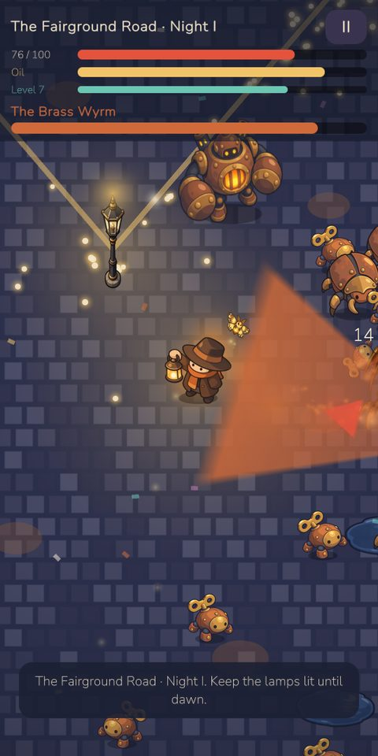
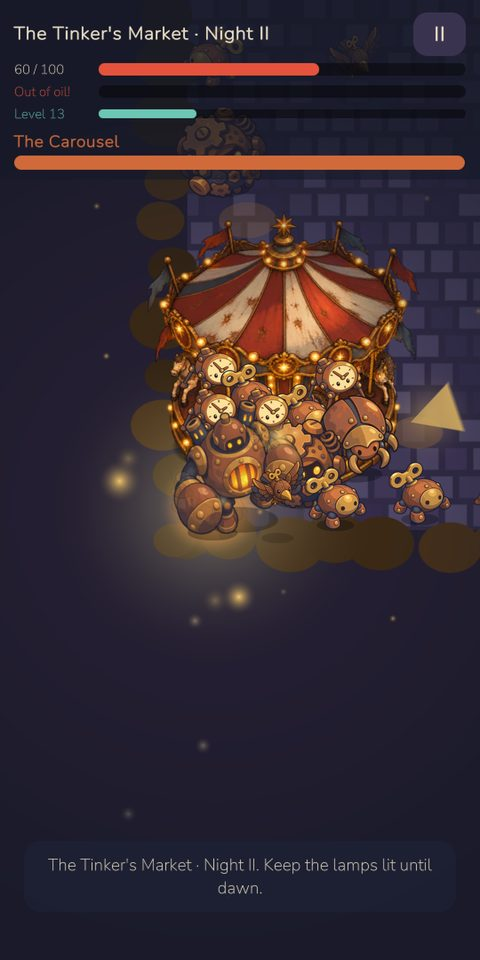

Roads and bosses
All fifteen roads, the boss waiting at the end of each, and how the three nights per road work.

On this page
Note The game is in testing, so details here may change. This page names every boss, so skip it if you would rather meet them in the dark.
How roads and nights work
There are fifteen roads. Each ends in a boss that arrives once the night's five minutes are up. Every road has three nights:
- Night I is the first visit. Winning it opens the next road.
- Night II opens after you win Night I, and Night III after Night II. They bring more Rust, tougher Rust and harder-hitting Rust, and the boss's attacks get fiercer.
- Each road is harder than the one before it.
Every boss has a set of attacks, and each big attack has a red warning on the ground first. Three of them are worth knowing by name: Rain (marks appear on the ground, fill in, and then glass falls on them), Snuff (the boss puts out every lamp nearby, and Soot climbs out of each one), and Spiral (two arms of shots turning round the boss). The others are Charge, Breath, Ring, Summon, Sweep, Slam and Volley.
The roads
| # | Road | Boss | Lamps | Rust that walks here | Boss attacks |
|---|---|---|---|---|---|
| 1 | The Fairground Road | The Brass Wyrm | 8 | Ticker, Soot, Plateback, Brute | Breath, Charge, Sweep |
| 2 | Orchard Lane | The Scarecrow Engine | 7 | Ticker, Crow, Soot, Snuffer, Brute | Summon, Volley, Slam |
| 3 | The Mill Race | The Runaway Wheel | 6 | Soot, Rustling, Tick-bomb, Plateback, Brute | Charge, Ring |
| 4 | The Tinker's Market | The Carousel | 8 | Ticker, Rustling, Crow, Cog-heap, Plateback, Brute | Ring, Summon, Sweep |
| 5 | The Canal Locks | The Paddle Steamer | 8 | Soot, Crow, Oil-spitter, Rustling, Brute | Volley, Charge, Summon |
| 6 | The Railway Cutting | The Runaway Engine | 7 | Ticker, Plateback, Tick-bomb, Rustling, Brute | Charge, Breath, Slam |
| 7 | Clockmakers' Row | The Great Cuckoo | 8 | Ticker, Soot, Cog-heap, Crow, Oil-spitter, Brute | Slam, Summon, Volley, Ring |
| 8 | The Moor Road | The Weathervane Giant | 5 | Crow, Soot, Snuffer, Rustling, Brute | Sweep, Breath, Ring |
| 9 | The Bridge of Bells | The Bell-Ringer | 7 | Ticker, Plateback, Crow, Tick-bomb, Oil-spitter, Brute | Ring, Slam, Summon |
| 10 | The City Gate | The Gatekeeper | 6 | Ticker, Soot, Snuffer, Plateback, Cog-heap, Crow, Brute | Breath, Ring, Charge, Summon, Slam, Volley |
| 11 | The Rain's Edge | The Lamp-eater | 9 | Soot, Snuffer, Oil-spitter, Crow, Rustling, Brute | Snuff, Volley, Charge, Summon |
| 12 | The Wall Gardens | The Glass Gardener | 6 | Ticker, Crow, Cog-heap, Oil-spitter, Plateback, Brute | Rain, Sweep, Ring |
| 13 | The Cistern Yard | The Fountain Knight | 8 | Soot, Tick-bomb, Oil-spitter, Rustling, Cog-heap, Brute | Spiral, Charge, Slam, Rain |
| 14 | The Wall Stairs | The Hour Hand | 7 | Ticker, Tick-bomb, Crow, Snuffer, Plateback, Brute | Sweep, Spiral, Breath, Charge, Ring |
| 15 | The Watchtower | The Rustwarden | 8 | Ticker, Soot, Tick-bomb, Snuffer, Cog-heap, Oil-spitter, Brute | Snuff, Spiral, Rain, Charge, Summon, Breath |
A few of them
The Fairground Road. Stalls and lamp-posts where the fair stopped mid-tune. The Brass Wyrm is a clockwork dragon from an old fairground, breathing sparks.
The Tinker's Market. Awnings, crates and a carousel at the centre. The Carousel's painted horses fly off in every direction.

The Bridge of Bells. A long bridge hung with silent bells. The Bell-Ringer rings rings of iron sound across it.
The City Gate. Rain hangs in the air, not falling. The city is close, and the Gatekeeper holds the first gate.
The Rain's Edge. Where the held rain begins, under the city wall. Every lamp out here was put out.
The Watchtower. The last tower on the wall. Its boss, the Rustwarden, is crowned with dead street lamps.
Each road also has its own scenery. Solid pieces such as stalls, trees and stones block you and the walking Rust (fliers pass over), while flat ones such as puddles and heather are just there to look at. Scenery is always kept clear of your starting point and the lamps.
To get stronger before a hard boss, see The tower and the lamplighters.